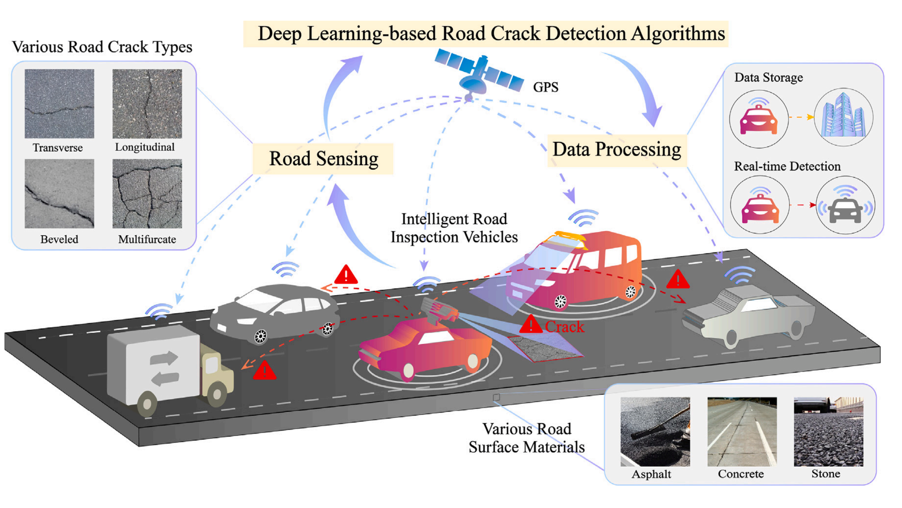
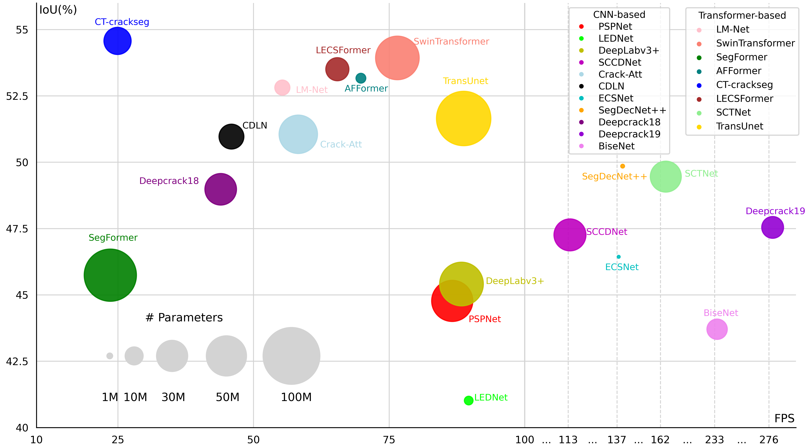
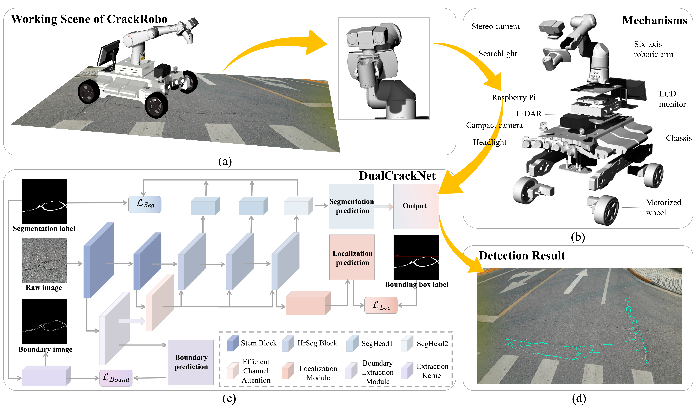
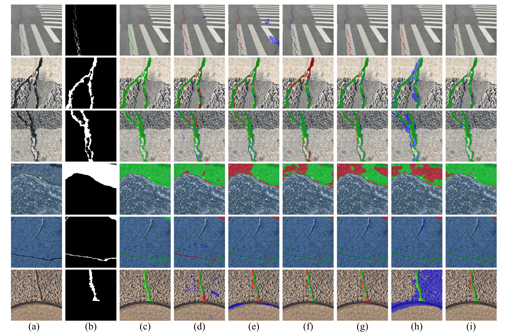
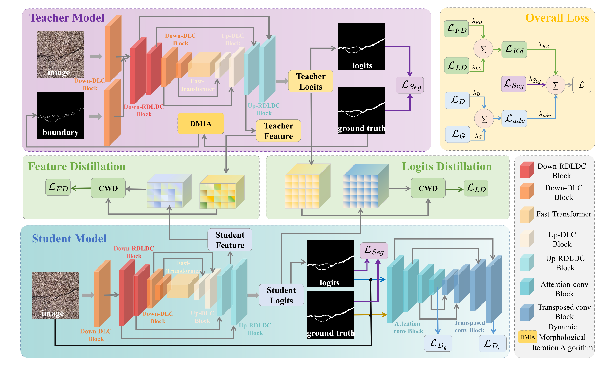
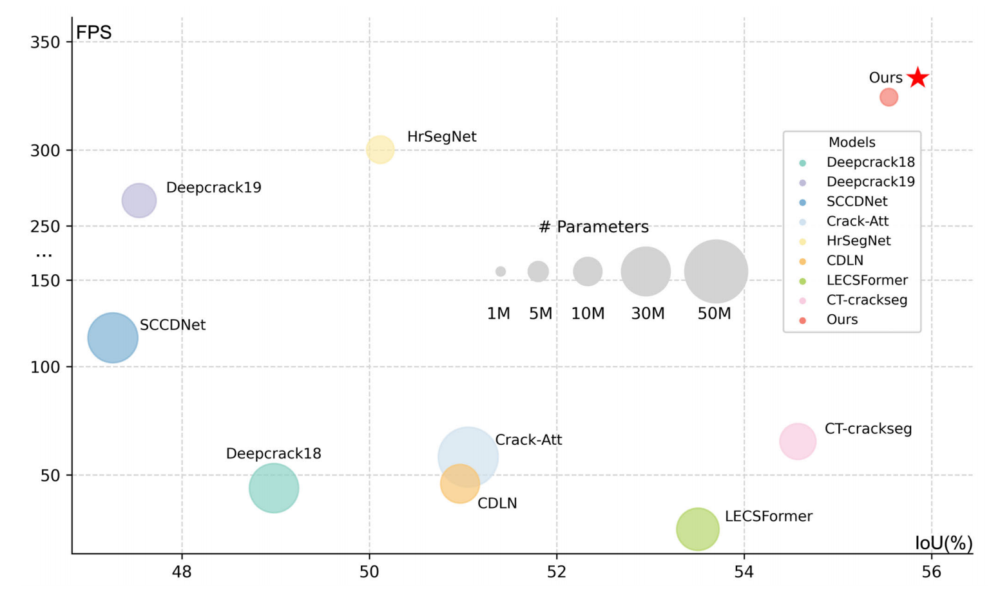

Zhengfei Song I am affiliated with the California Institute of Technology. My research interests include vision-language models, computer vision, and robotic perception. |  |
News
|
Selected PublicationMy publications explore road crack detection, weakly supervised learning, and knowledge distillation. The complete publication list and current citation counts are available on Google Scholar. |
  | Vehicular road crack detection with deep learning: An online benchmark for comprehensive evaluation of existing algorithms N. Ma, Z. Song, Q. Hu, C. W. Liu, Y. Han, Y. Zhang, R. Fan, L. Xie Advanced Engineering Informatics 77, 105158, 2027 Paper / Website / Dataset |
  | Robust and Real-time Road Crack Detection through Collaborative Dual-Branch Learning on Robotic Sensing Platform Z. Song, N. Ma, Z. Zhang, M. J. Lee, S. Vityazev, A. Dvorkovich, R. Fan IEEE International Conference on Real-time Computing and Robotics, 2025 Paper / Code |
  | Self-Derived Multi-Modal Knowledge Distillation for Real-time Road Crack Detection N. Ma*, Q. Hu*, Z. Song*, S. Guo, R. Fan (*Equal Contribution) IEEE Sensors Journal, 2025 Paper / Code |
Visitors |
Website template from Jon Barron. Source code. |